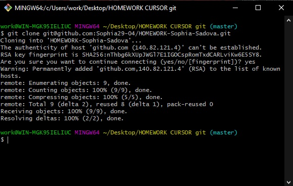

Команди Git
- git config --global user.name blabla
- задавання конфігурації імені користувача.
git config --global user.email blabal@bla - задавання конфігурації email користувача.
git init - створення git-репозитарія.
git status - використовується для визначення які файли в якому стані знаходяться.
git add . - добавити усі файли в буфер.
git commit - додає файли, що були змінені.
git log - найчастіша команда, показує логи (коміти).
git checkout - перемикання гілок (бранчів) або відновлення робочих файлів дерева.
git branch - покаже список гілок (бранчів)(локальні і віддалені),а також створює нову гілку.
git push - відправляє внесені зміни на віддалений репозиторій, який раніше був заданий як відслідковуваний.
git pull - працює як комбінація команд git ferch i git merge, початку забирає зміни з вказаного віддаленого репозиторію, а потім пробує злити їх з поточною гілкою.
git merge - зливання гілки з репозиторію з поточною гілкою.
git clone - клонування віддаленого репозиторію.
.gitignore файл - це файл, який визначає які файли не слід ігнорувати у заданому вихідному коді.
git revert - відміняє коміт (виконує повну протилежність, те що було знищено вертає, те що було добавлено знищує).
git reset - переміщує HEAD.
git rebase- бере всі комміти із одної гілки і в тому ж порядку приміняє їх до другої гілки.
git cherry-pick - бере зміни, що вносяться одним коммітом, і намагається повторно застосувати їх у вигляді нового комміту в поточній гілці.
git stash - перегляд записів у копілці.
Підключення github через SSH
ssh-keygen - генеруємо ssh-ключ.
Знаходимо папку .ssh і відкриваємо файл id_rsa.pub
Копіюємо ключ і додаємо в github
Заходимо в репозиторій і копіюємо SSH адресу.
Клонуємо репозиторій
